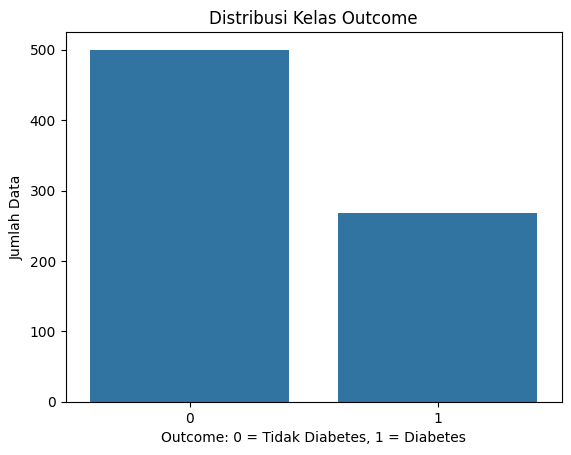
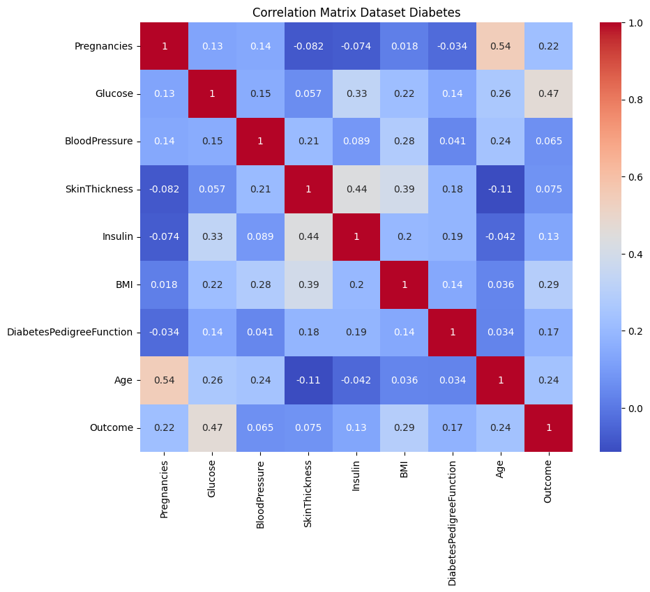
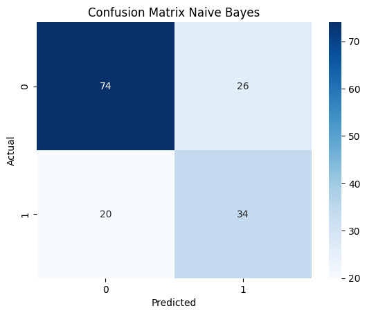

Analisa Data Menggunakan Naive Bayes#
Studi Kasus: Klasifikasi Penyakit Diabetes#
Proyek ini bertujuan untuk melakukan analisis data dan klasifikasi penyakit diabetes menggunakan algoritma Naive Bayes dengan bahasa pemrograman Python dan library Scikit-Learn.
Dataset: Pima Indians Diabetes Database
Link Kaggle: https://www.kaggle.com/datasets/uciml/pima-indians-diabetes-database
BAB 1. Pendahuluan#
1.1 Latar Belakang#
Diabetes merupakan salah satu penyakit kronis yang dapat menimbulkan berbagai komplikasi jika tidak terdeteksi sejak dini. Perkembangan teknologi data mining dan machine learning dapat membantu proses analisis data kesehatan untuk memprediksi kemungkinan seseorang terkena diabetes.
Salah satu metode klasifikasi yang sederhana dan banyak digunakan adalah Naive Bayes. Metode ini bekerja berdasarkan konsep probabilitas dan Teorema Bayes. Naive Bayes cocok digunakan untuk klasifikasi karena proses komputasinya cepat, sederhana, dan cukup efektif pada banyak kasus.
Pada proyek ini digunakan dataset Pima Indians Diabetes Database dari Kaggle untuk mengklasifikasikan apakah pasien memiliki indikasi diabetes atau tidak berdasarkan beberapa atribut kesehatan.
1.2 Rumusan Masalah#
Bagaimana menerapkan algoritma Naive Bayes untuk klasifikasi diabetes?
Bagaimana hasil akurasi model Naive Bayes pada dataset diabetes?
Bagaimana hasil evaluasi model berdasarkan confusion matrix dan classification report?
1.3 Tujuan#
Mengimplementasikan algoritma Naive Bayes menggunakan Python dan Scikit-Learn.
Melakukan preprocessing pada dataset diabetes.
Mengevaluasi performa model klasifikasi Naive Bayes.
BAB 2. Tinjauan Pustaka#
2.1 Klasifikasi#
Klasifikasi adalah salah satu teknik supervised learning yang digunakan untuk memprediksi label kelas dari suatu data. Pada supervised learning, data training sudah memiliki label kelas sehingga model dapat belajar dari pola data tersebut.
2.2 Naive Bayes#
Naive Bayes adalah algoritma klasifikasi berbasis probabilitas yang menggunakan Teorema Bayes. Algoritma ini disebut “naive” karena mengasumsikan bahwa setiap atribut atau fitur saling bebas satu sama lain terhadap kelas target.
Rumus Teorema Bayes:
Keterangan:
\(P(C|X)\) = probabilitas kelas C jika diketahui data X
\(P(X|C)\) = probabilitas data X pada kelas C
\(P(C)\) = probabilitas awal kelas C
\(P(X)\) = probabilitas data X
Dalam klasifikasi, model memilih kelas dengan nilai probabilitas posterior terbesar.
2.3 Gaussian Naive Bayes#
Karena dataset diabetes memiliki banyak fitur numerik seperti Glucose, BloodPressure, BMI, dan Age, maka model yang digunakan adalah Gaussian Naive Bayes. GaussianNB cocok untuk data numerik yang diasumsikan mengikuti distribusi normal.
BAB 3. Metodologi#
3.1 Dataset#
Dataset yang digunakan adalah Pima Indians Diabetes Database dari Kaggle.
Link dataset: https://www.kaggle.com/datasets/uciml/pima-indians-diabetes-database
Dataset ini memiliki beberapa atribut kesehatan seperti:
Pregnancies
Glucose
BloodPressure
SkinThickness
Insulin
BMI
DiabetesPedigreeFunction
Age
Outcome
Kolom Outcome adalah target klasifikasi:
0 = Tidak diabetes
1 = Diabetes
3.2 Catatan Penting Data Understanding#
Catatan penting yang wajib dicantumkan dalam laporan:
Dataset hanya berisi perempuan usia ≥ 21 tahun.
Data berasal dari populasi Pima Indian.
Ada nilai 0 yang sebenarnya missing value, terutama pada kolom seperti Glucose, BloodPressure, SkinThickness, Insulin, dan BMI.
Catatan ini penting karena mempengaruhi interpretasi hasil model. Model yang dibuat dari dataset ini belum tentu dapat langsung digeneralisasi untuk seluruh populasi.
3.3 Tahapan Analisis#
Tahapan yang dilakukan pada proyek ini:
Import library
Load dataset
Data understanding
Data cleaning
Split data training dan testing
Training model Gaussian Naive Bayes
Evaluasi model
Kesimpulan
1. Import Library#
Library yang digunakan adalah pandas, numpy, matplotlib, seaborn, dan scikit-learn.
import pandas as pd
import numpy as np
import matplotlib.pyplot as plt
import seaborn as sns
from sklearn.model_selection import train_test_split, cross_val_score
from sklearn.naive_bayes import GaussianNB
from sklearn.metrics import accuracy_score, confusion_matrix, classification_report
print('Library berhasil diimport')
---------------------------------------------------------------------------
ModuleNotFoundError Traceback (most recent call last)
Cell In[1], line 1
----> 1 import pandas as pd
2 import numpy as np
3 import matplotlib.pyplot as plt
ModuleNotFoundError: No module named 'pandas'
2. Load Dataset#
Ada dua cara menggunakan dataset:
Cara A — Upload Manual ke Colab#
Download dataset dari Kaggle.
Upload file
diabetes.csvke Google Colab.Jalankan kode berikut.
Cara B — Menggunakan Link CSV Alternatif#
Jika belum bisa memakai Kaggle API, gunakan link CSV publik berikut.
url = 'https://raw.githubusercontent.com/plotly/datasets/master/diabetes.csv'
df = pd.read_csv(url)
df.head()
| Pregnancies | Glucose | BloodPressure | SkinThickness | Insulin | BMI | DiabetesPedigreeFunction | Age | Outcome | |
|---|---|---|---|---|---|---|---|---|---|
| 0 | 6 | 148 | 72 | 35 | 0 | 33.6 | 0.627 | 50 | 1 |
| 1 | 1 | 85 | 66 | 29 | 0 | 26.6 | 0.351 | 31 | 0 |
| 2 | 8 | 183 | 64 | 0 | 0 | 23.3 | 0.672 | 32 | 1 |
| 3 | 1 | 89 | 66 | 23 | 94 | 28.1 | 0.167 | 21 | 0 |
| 4 | 0 | 137 | 40 | 35 | 168 | 43.1 | 2.288 | 33 | 1 |
3. Data Understanding#
Pada tahap ini dilakukan pengecekan ukuran data, tipe data, missing value, dan statistik deskriptif.
print('Ukuran dataset:', df.shape)
print('\nInformasi dataset:')
df.info()
print('\nJumlah missing value:')
print(df.isnull().sum())
df.describe()
Ukuran dataset: (768, 9)
Informasi dataset:
<class 'pandas.core.frame.DataFrame'>
RangeIndex: 768 entries, 0 to 767
Data columns (total 9 columns):
# Column Non-Null Count Dtype
--- ------ -------------- -----
0 Pregnancies 768 non-null int64
1 Glucose 768 non-null int64
2 BloodPressure 768 non-null int64
3 SkinThickness 768 non-null int64
4 Insulin 768 non-null int64
5 BMI 768 non-null float64
6 DiabetesPedigreeFunction 768 non-null float64
7 Age 768 non-null int64
8 Outcome 768 non-null int64
dtypes: float64(2), int64(7)
memory usage: 54.1 KB
Jumlah missing value:
Pregnancies 0
Glucose 0
BloodPressure 0
SkinThickness 0
Insulin 0
BMI 0
DiabetesPedigreeFunction 0
Age 0
Outcome 0
dtype: int64
| Pregnancies | Glucose | BloodPressure | SkinThickness | Insulin | BMI | DiabetesPedigreeFunction | Age | Outcome | |
|---|---|---|---|---|---|---|---|---|---|
| count | 768.000000 | 768.000000 | 768.000000 | 768.000000 | 768.000000 | 768.000000 | 768.000000 | 768.000000 | 768.000000 |
| mean | 3.845052 | 120.894531 | 69.105469 | 20.536458 | 79.799479 | 31.992578 | 0.471876 | 33.240885 | 0.348958 |
| std | 3.369578 | 31.972618 | 19.355807 | 15.952218 | 115.244002 | 7.884160 | 0.331329 | 11.760232 | 0.476951 |
| min | 0.000000 | 0.000000 | 0.000000 | 0.000000 | 0.000000 | 0.000000 | 0.078000 | 21.000000 | 0.000000 |
| 25% | 1.000000 | 99.000000 | 62.000000 | 0.000000 | 0.000000 | 27.300000 | 0.243750 | 24.000000 | 0.000000 |
| 50% | 3.000000 | 117.000000 | 72.000000 | 23.000000 | 30.500000 | 32.000000 | 0.372500 | 29.000000 | 0.000000 |
| 75% | 6.000000 | 140.250000 | 80.000000 | 32.000000 | 127.250000 | 36.600000 | 0.626250 | 41.000000 | 1.000000 |
| max | 17.000000 | 199.000000 | 122.000000 | 99.000000 | 846.000000 | 67.100000 | 2.420000 | 81.000000 | 1.000000 |
Catatan Penting#
Walaupun hasil isnull() menunjukkan tidak ada nilai kosong, pada dataset ini terdapat nilai 0 yang tidak realistis untuk beberapa atribut medis. Nilai 0 tersebut dianggap sebagai missing value.
Kolom yang perlu diperhatikan:
Glucose
BloodPressure
SkinThickness
Insulin
BMI
kolom_missing_0 = ['Glucose', 'BloodPressure', 'SkinThickness', 'Insulin', 'BMI']
print('Jumlah nilai 0 pada kolom medis:')
print((df[kolom_missing_0] == 0).sum())
Jumlah nilai 0 pada kolom medis:
Glucose 5
BloodPressure 35
SkinThickness 227
Insulin 374
BMI 11
dtype: int64
4. Visualisasi Data#
Visualisasi dilakukan untuk memahami distribusi target dan hubungan antar fitur.
sns.countplot(x='Outcome', data=df)
plt.title('Distribusi Kelas Outcome')
plt.xlabel('Outcome: 0 = Tidak Diabetes, 1 = Diabetes')
plt.ylabel('Jumlah Data')
plt.show()

plt.figure(figsize=(10, 8))
sns.heatmap(df.corr(), annot=True, cmap='coolwarm')
plt.title('Correlation Matrix Dataset Diabetes')
plt.show()

5. Data Cleaning#
Nilai 0 pada kolom medis tertentu diganti menjadi NaN, kemudian diisi menggunakan nilai median. Median dipilih karena lebih tahan terhadap data ekstrem dibandingkan mean.
df_clean = df.copy()
# Mengubah nilai 0 menjadi NaN pada kolom medis tertentu
df_clean[kolom_missing_0] = df_clean[kolom_missing_0].replace(0, np.nan)
print('Missing value setelah nilai 0 diganti NaN:')
print(df_clean.isnull().sum())
# Mengisi missing value dengan median
for kolom in kolom_missing_0:
df_clean[kolom] = df_clean[kolom].fillna(df_clean[kolom].median())
print('\nMissing value setelah imputasi median:')
print(df_clean.isnull().sum())
Missing value setelah nilai 0 diganti NaN:
Pregnancies 0
Glucose 5
BloodPressure 35
SkinThickness 227
Insulin 374
BMI 11
DiabetesPedigreeFunction 0
Age 0
Outcome 0
dtype: int64
Missing value setelah imputasi median:
Pregnancies 0
Glucose 0
BloodPressure 0
SkinThickness 0
Insulin 0
BMI 0
DiabetesPedigreeFunction 0
Age 0
Outcome 0
dtype: int64
6. Menentukan Fitur dan Target#
Fitur adalah variabel input, sedangkan target adalah kolom Outcome.
X = df_clean.drop('Outcome', axis=1)
y = df_clean['Outcome']
print('Fitur:')
print(X.columns.tolist())
print('\nTarget: Outcome')
Fitur:
['Pregnancies', 'Glucose', 'BloodPressure', 'SkinThickness', 'Insulin', 'BMI', 'DiabetesPedigreeFunction', 'Age']
Target: Outcome
7. Membagi Data Training dan Testing#
Data dibagi menjadi 80% data training dan 20% data testing.
X_train, X_test, y_train, y_test = train_test_split(
X, y,
test_size=0.2,
random_state=42,
stratify=y
)
print('Jumlah data training:', X_train.shape[0])
print('Jumlah data testing:', X_test.shape[0])
Jumlah data training: 614
Jumlah data testing: 154
8. Training Model Naive Bayes#
Model yang digunakan adalah Gaussian Naive Bayes karena data berbentuk numerik.
model = GaussianNB()
model.fit(X_train, y_train)
print('Model Gaussian Naive Bayes berhasil dilatih')
Model Gaussian Naive Bayes berhasil dilatih
9. Prediksi Data Testing#
Model digunakan untuk memprediksi data testing.
y_pred = model.predict(X_test)
hasil_prediksi = pd.DataFrame({
'Actual': y_test.values,
'Predicted': y_pred
})
hasil_prediksi.head(10)
| Actual | Predicted | |
|---|---|---|
| 0 | 0 | 1 |
| 1 | 0 | 0 |
| 2 | 0 | 0 |
| 3 | 1 | 0 |
| 4 | 0 | 0 |
| 5 | 0 | 0 |
| 6 | 1 | 1 |
| 7 | 1 | 1 |
| 8 | 0 | 0 |
| 9 | 0 | 1 |
10. Evaluasi Model#
Evaluasi dilakukan menggunakan accuracy, confusion matrix, dan classification report.
akurasi = accuracy_score(y_test, y_pred)
cm = confusion_matrix(y_test, y_pred)
print('Accuracy:', akurasi)
print('\nConfusion Matrix:')
print(cm)
print('\nClassification Report:')
print(classification_report(y_test, y_pred))
Accuracy: 0.7012987012987013
Confusion Matrix:
[[74 26]
[20 34]]
Classification Report:
precision recall f1-score support
0 0.79 0.74 0.76 100
1 0.57 0.63 0.60 54
accuracy 0.70 154
macro avg 0.68 0.68 0.68 154
weighted avg 0.71 0.70 0.70 154
sns.heatmap(cm, annot=True, fmt='d', cmap='Blues')
plt.title('Confusion Matrix Naive Bayes')
plt.xlabel('Predicted')
plt.ylabel('Actual')
plt.show()

Interpretasi Confusion Matrix#
True Negative (TN): pasien tidak diabetes dan diprediksi tidak diabetes.
True Positive (TP): pasien diabetes dan diprediksi diabetes.
False Positive (FP): pasien tidak diabetes tetapi diprediksi diabetes.
False Negative (FN): pasien diabetes tetapi diprediksi tidak diabetes.
Dalam kasus medis, nilai False Negative perlu diperhatikan karena model gagal mendeteksi pasien yang sebenarnya memiliki diabetes.
11. Cross Validation#
Cross validation digunakan untuk melihat performa model secara lebih stabil.
scores = cross_val_score(model, X, y, cv=5)
print('Hasil akurasi tiap fold:', scores)
print('Rata-rata akurasi cross validation:', scores.mean())
Hasil akurasi tiap fold: [0.74025974 0.73376623 0.74025974 0.79738562 0.73856209]
Rata-rata akurasi cross validation: 0.750046685340803
BAB 4. Hasil dan Pembahasan#
Berdasarkan hasil pengujian, model Gaussian Naive Bayes mampu melakukan klasifikasi terhadap data diabetes. Nilai akurasi menunjukkan seberapa banyak data testing yang berhasil diprediksi dengan benar.
Confusion matrix digunakan untuk melihat jumlah prediksi benar dan salah pada masing-masing kelas. Pada kasus prediksi penyakit, kesalahan berupa False Negative harus diperhatikan karena berarti pasien yang sebenarnya diabetes diprediksi tidak diabetes.
Model Naive Bayes memiliki kelebihan yaitu sederhana, cepat, dan mudah diimplementasikan. Namun, model ini memiliki kelemahan karena mengasumsikan setiap fitur saling bebas, padahal pada data medis beberapa fitur seperti Glucose, BMI, Age, dan Insulin dapat memiliki hubungan satu sama lain.
BAB 5. Kesimpulan dan Saran#
5.1 Kesimpulan#
Algoritma Naive Bayes dapat digunakan untuk mengklasifikasikan penyakit diabetes berdasarkan dataset Pima Indians Diabetes.
Model Gaussian Naive Bayes cocok digunakan karena fitur pada dataset sebagian besar berupa data numerik.
Preprocessing penting dilakukan karena terdapat nilai 0 yang sebenarnya merupakan missing value pada beberapa kolom medis.
Evaluasi model dilakukan menggunakan accuracy, confusion matrix, classification report, dan cross validation.